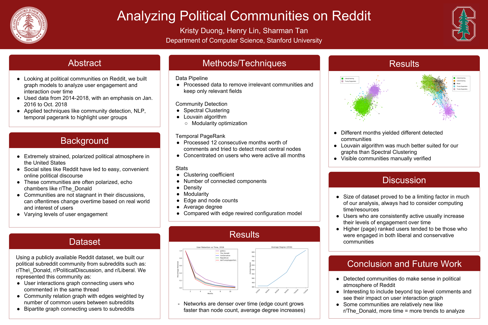
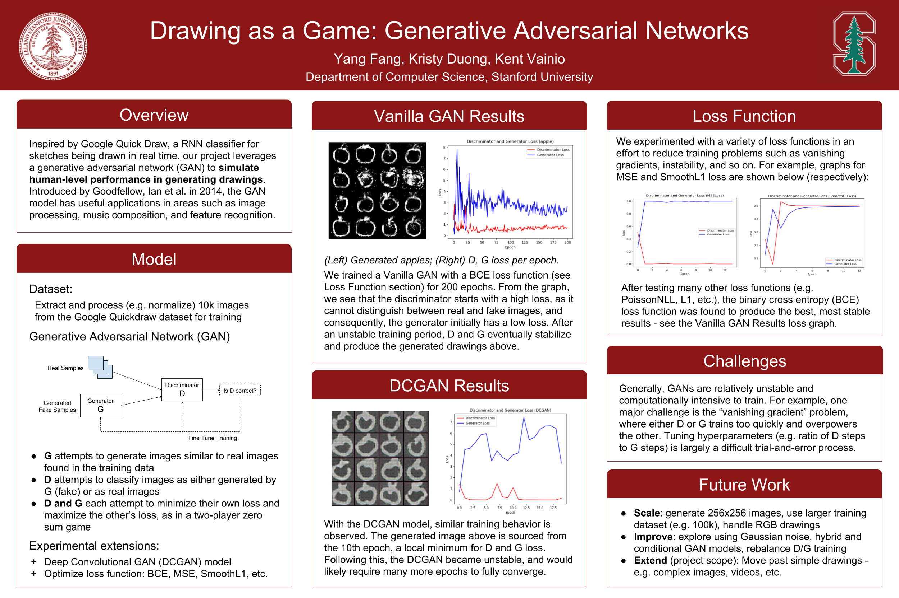

Programmer
"That's life in the city."
Relevant Coursework
Artificial Intelligence (CS221), Analysis of Networks (CS224W), Design & Analysis of Algorithms (CS161), Web Applications (CS142), From Languages to Information (CS124), Principles in Computer Systems (CS110), Exploring Computation Journalism (CS206), Data Visualization (CS448B), Introduction to Databases (CS145), Introduction to Computer Graphics and Imaging (CS148), Mining Massive Datasets (CS246), Natural Language Processing with Deep Learning (CS224N)
Experience
Researcher, University of Tokyo Institute of Industrial Science
(Summer 2018)
Full Stack Web Developer, Stanford Center for the Study of Language and Information
(Summer 2017)
The Openproof Project focuses on developing desktop applications to teach computer logic and primarily consists of three software packages. My team worked on rebuilding the class and grade management website to support new features and a cleaner design. As a web developer, I assisted in redesigning the UI/UX, porting legacy code from Tapestry into a maintainable codebase, developing components for the client-side, and writing features such as downloads and database access for the server-side. Our frontend consisted of custom JavaScript and JQuery, and our backend was written in Java with a Jersey-Jackson framework and SQL database. Currently, the project is in beta testing
Projects
Analyzing Political Communities on Reddit
(Fall 2018)
Drawing as a Game: Generative Adversarial Networks
(Fall 2018)
Moonlit Night (CS148 Final Raytraced Image)
(Fall 2018)
Photo Application
(Winter 2017)
Developed using the MEAN (MongoDB, ExpressJS, AngularJS, NodeJS) stack, this photo application includes login services, photo uploads, commenting, likes, and activity feeds.

Magic Mirror
(Spring 2016)
Using a Raspberry Pi shell, our team built a magic mirror using an old monitor and a double-sided mirror. Together, we created an animation library to render various images such as butterflies, cherry blossoms, and shooting stars.